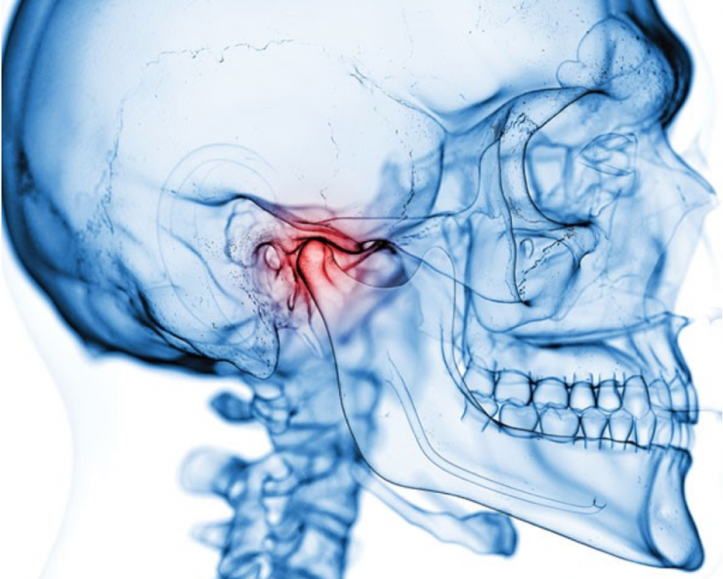

대한치과의사협회 등록 물리치료 인증기관
건강보험심사평가원에 등록된 전문적인 물리치료 장비를 사용하여
턱관절 물리치료에 최적화된 물리치료실 운영합니다.
"턱관절 장애는 다른 통증을 유발합니다"

턱 주변의 신경과 머리, 어깨 주변의 신경은 한 곳에서 만나기 때문에
턱관절 장애가 있으면 두통이나 어깨 통증도 생길 수 있어 꼭 치료받길 권장드립니다
"다음 단계를 따라하며 턱관절 장애를 자가진단 해보세요"
STEP 01
새끼손가락을 양쪽 귓구멍에 넣고 약간 누르면서 입을 천천히 벌렸다 다물어 봅니다
턱관절 부위에서 딸깍딸깍 소리가 나면 대개는 턱관절에 문제가 있는 경우입니다
딸깍딸깍 소리가 나는 정도가 아니라 찍찍 모래가 긁히는 것 같은 소리가 난다면
턱관절 상태가 상당히 좋지 않은 것으로 빠른 시일 내에 병원에 방문해주셔야 합니다
STEP 02
오른손의 2.3.4번 손가락을 붙여서 수직으로 입 안에 넣어 봅니다
정상적인 경우에는 세개의 손가락이 부드럽게 입 안에 들어갈 정도로 입이 벌어져야 하는데
만약 힘들다면 개구장애(입을 벌리는 것에 문제가 있는 것)가 있다고 볼 수 있습니다
STEP 03
손거울을 들고 보면서 입을 천천히 벌렸다가 다물어 봅니다
어금니가 잘 맞물리도록 할 때 입이 벌어지고 다물어지는 모양이
일직선이 되지 않고 한쪽으로 기울어지거나 지그재그 혹은 S자 모양등을 보이면
턱관절에 문제가 있을 가능성이 높습니다
STEP 04
새끼 손가락을 위턱의 큰 어금니의 뿌리 쪽을 향해 잇몸과 볼과의 사이를 눌러봅니다
심하게 통증이 느껴진다면, 턱관절에 문제가 있을 가능성이 높습니다
정상적인 경우에는 통증이 없거나 있다고 해도 약간의 불편함을 느낄 정도입니다
"호전율이 좋으려면 병원을 꾸준히 방문해주셔야 합니다"
AIDEN DENTAL
알고 계신가요? 턱관절 치료도 의료보험이 된다는 사실 !
기본적인 X-ray 촬영 및 분석검사, 물리치료는 모두 보험적용 가능합니다
보험